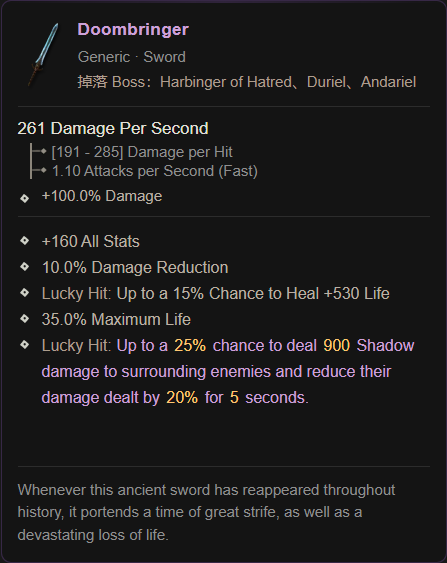
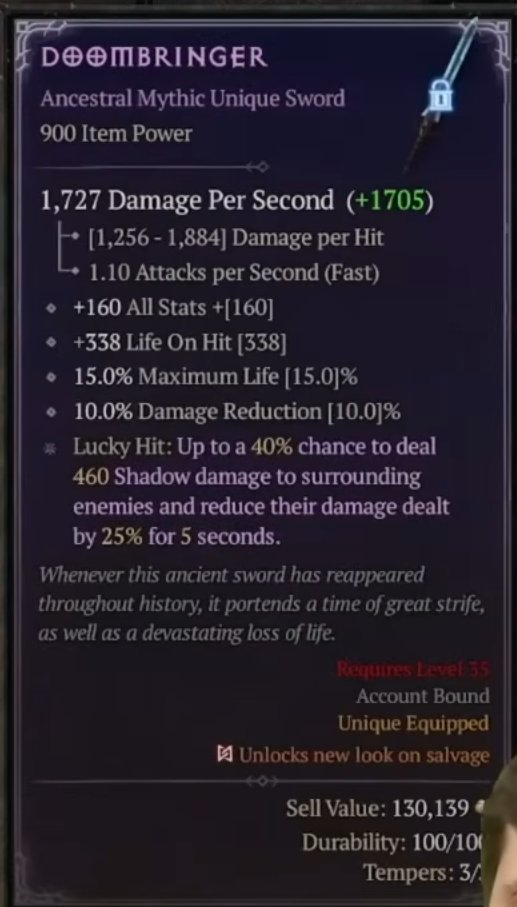

《憎恨之王》神话装备变动前瞻
四件神话暗金装备加强——数值增强、机制重做、流派洗牌
本次变动概览
全局增伤 60%→80%[x]，移除天使/恶魔特攻
纯防御重做，减伤 20%→25%，触发率 25%→40%
从精英/压制转向易伤爆发，+450%易伤伤害
暴伤 100%[x]→150%[x]，纯粹数值增强
4 月 28 日正式上线，一切内容以正式版本为准
堕灭传承 — Heir of Perdition
从头盔特攻到全局增伤——泛用性的质变飞跃


📈 核心变化
从"条件性特攻"变为"无条件的全局增伤"，泛用性大幅提升。不再绑定特定敌人类型，意味着在任何场景下都能享受完整的增伤收益。数值从 60%[x] 提升到 80%[x]，增幅高达 33%。对于追求极限输出的玩家来说，这是一个从"看情况使用"到"无脑毕业"的质变。
所有职业：追求极致输出的通用毕业头盔，优先级显著上升。不再仅限于对抗天使/恶魔敌人，而是成为任何场景下的最优选择。
"从特攻利器到全局重炮——堕灭传承完成了从'针对性武器'到'全面输出核心'的蜕变。"
末日使者 — Doombringer
从攻防兼备到防御核心——定位的彻底转向


🛡️ 核心变化
定位从"攻防兼备"彻底转向"纯粹防御与回复"。牺牲增伤能力，换取更稳定可控的生存保障。减伤触发率从 25% 提升到 40%，意味着在同等攻击频率下，减伤覆盖率提升约 60%。
旋风斩野蛮人、近战游侠：高难场景下的顶级生存武器，生存能力提升显著。
追求极限输出的流派：优先级下降，不再作为首选增伤件。
"从攻守兼备到防御核心——末日使者在失去增伤锋芒的同时，化身为坚不可摧的壁垒。"
先驱者涅塞克姆 — Nesekem, The Herald
全面重做——从压制专精到易伤引擎


🔄 核心变化
全面重做。从绑定压制流派的"精英杀手"，转变为泛用性更强的"单体易伤爆发神器"。不再限制流派选择，适用于更多需要快速触发易伤增伤的场景。
灵巫（专属）：对缺乏单体爆发和易伤触发手段的流派是绝对核心。高攻速下可快速循环标记爆发。
"从压制专精到易伤引擎——先驱者不再执着于精英猎杀，转而以易伤标记引爆每一次攻击。"
祖父 — The Grandfather
纯粹的数值增强——暴伤加成再创新高


⚔️ 核心变化
纯粹的数值增强，进一步巩固其作为"终极输出武器"的地位。暴伤加成从 100%[x] 提升到 150%[x]，增幅达 50%。对于暴击率高的流派而言，这意味着每个暴击都能造成更夸张的伤害。
野蛮人、死灵法师、圣骑士（专属）：双手流派的终极毕业武器，暴伤加成无可替代。配合暴击率堆叠，输出天花板再创新高。
"祖父依然是祖父——只不过这位老人家变得更强壮了。"
装备重做后的流派趋势
这些变动将如何影响现有 BD 构筑
堕灭传承（80%[x]全局增伤）替代旧版本的天使/恶魔特攻，成为通用输出核心。配合祖父（150%[x]暴伤加成），任何双手流派在暴击后的伤害将达到新的高度。
末日使者（40%几率25%减伤）转向纯防御，适合旋风斩野蛮人等高频近战流派。在高难度场景下，减伤覆盖率提升60%，大幅降低猝死率。
先驱者涅塞克姆（+450%易伤+必暴）成为灵巫流派的单体爆发核心。高攻速下可快速循环易伤标记+暴击输出，在BOSS战中表现尤为突出。
以上装备变动均基于《憎恨之王》测试版截图反推。神话暗金装备仅在资料片正式上线后可获取，具体掉落来源待官方确认。请以 4 月 28 日实际内容为准。